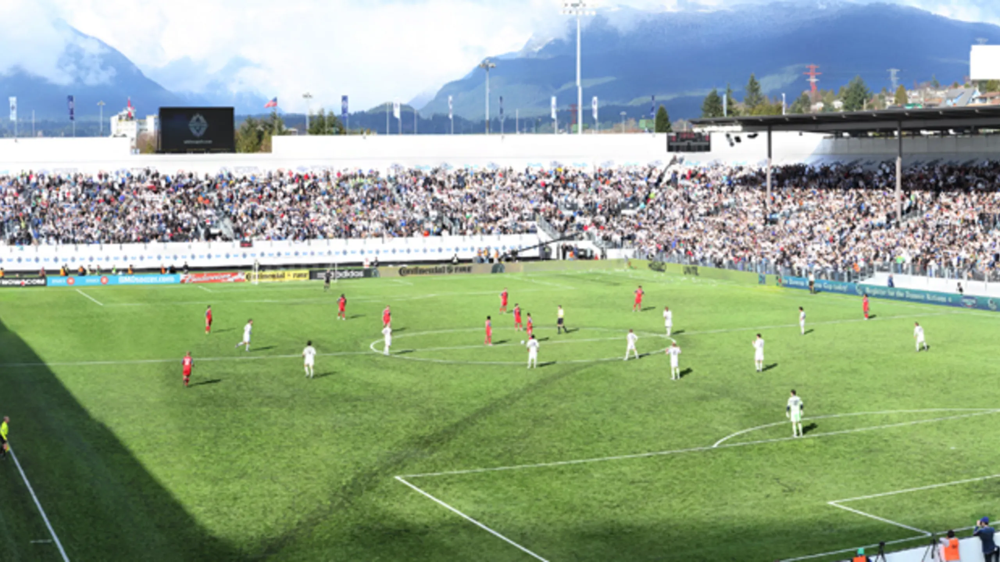
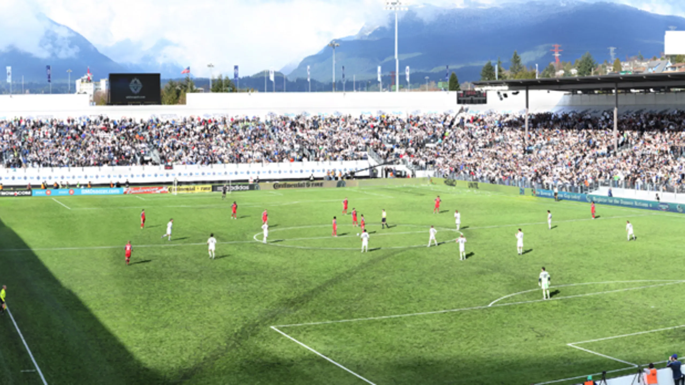

Vancouver Whitecaps 
The Vancouver Whitecaps are a soccer team located in the city of Vancouver. Vancouver were awarded their first and Canada’s second
MLS team in 2009. The Whitecaps were the 17th team to enter the MLS and began playing their games in the 2011 season. Home
games for the Whitecaps are held at BC Place in Vancouver, which is also shared by the Canadian Football League's BC Lions. Built for
both football and Canadian football, the 54,500-seat multipurpose dome debuted in 1983.
 
